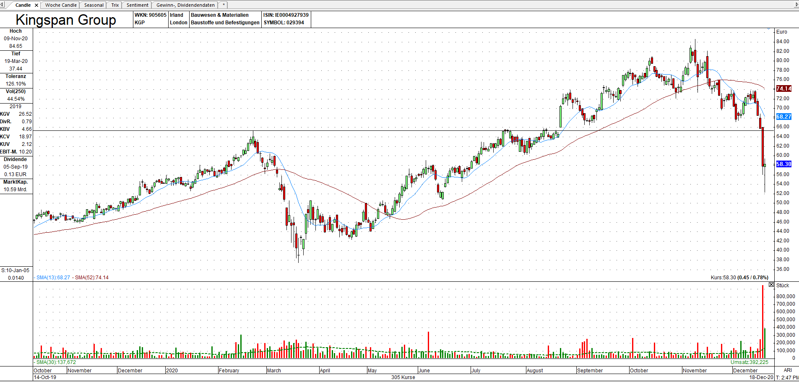

Am Mittwoch bzw. Donnerstag vollendete die Kingspan Group mit einem Mordsausbruch eine 4-monatige komplexe Schulter-Kopf-Schulter-Formation. Innerhalb eines Tages stürzte die Aktie durch die Unterstützungs-Linie bei 65 und befand sich danach erstmal in freiem Fall.
